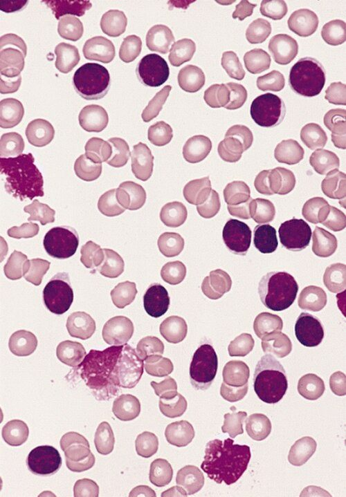

General information only. It does not replace advice from your care team and should not be used to choose a treatment.

.jpg){kind=link}
At a glance
| How common | 4-5 cases per 100,000 a year; median age 70 |
| Typical finding | Lymphocytosis on a routine blood test |
| Prognostic factors | IGHV mutation status, 17p deletion, TP53 mutation |
| Treatment | "Watch and wait"; BTK inhibitors, fixed-duration venetoclax with obinutuzumab or ibrutinib |
| Survival | Many patients have near-normal life expectancy |
What it is
A build-up of mature B lymphocytes that fail to die, in the blood, marrow, lymph nodes and spleen. An early symptom-free form, monoclonal B lymphocytosis, is found in 5% of over-60s and rarely progresses.
When to treat
Only when there is active disease: anaemia or low platelets, very large or growing nodes or spleen, symptoms such as fever, sweats or weight loss, or lymphocytes doubling in under 6 months. Treating earlier does not prolong life.
Treatment
- BTK inhibitors: ibrutinib, acalabrutinib, zanubrutinib, taken continuously; pirtobrutinib for resistance.
- Venetoclax with obinutuzumab (12 months) or with ibrutinib, fixed-duration treatments allowing long periods off medication.
- Chemo-immunotherapy (FCR) is now used in few cases.
- With TP53 abnormalities, always targeted therapy.
- CAR-T (lisocabtagene) and transplant for refractory cases.
Care
People with CLL have more infections and respond less well to vaccines: flu, pneumococcal, COVID-19 and (non-live) shingles vaccines, and skin checks because of higher skin cancer risk.
See also: Leukaemias, Lymphomas, Hairy cell leukaemia.
History · Medicapedia
Chronic lymphocytic leukaemia in the history of medicine
How it was discovered, who studied it and how its treatment changed over the centuries, told on Medicapedia, our sister site on the history of medicine.
Read the history on Medicapedia ↗Sources
- Hallek M, et al. iwCLL guidelines for diagnosis, indications for treatment, response assessment, and supportive management of CLL. Blood. 2018;131:2745-2760. doi:10.1182/blood-2017-09-806398
- Eichhorst B, et al. First-line venetoclax combinations in chronic lymphocytic leukemia (GAIA/CLL13). N Engl J Med. 2023;388:1739-1754. doi:10.1056/NEJMoa2213093
- Eichhorst B, et al. Chronic lymphocytic leukaemia: ESMO Clinical Practice Guidelines. Ann Oncol. 2021;32:23-33. doi:10.1016/j.annonc.2020.09.019